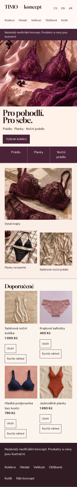

Independent, unofficial concept
From finding a fit
to reviewing a bag.
A fashion storefront rebuilt around lingerie, swimwear and nightwear, using fictional products and original illustrative photography.
Open the storefront ↗Browse the work.
Not a mockup.
Three actual Chromium captures from our working, independent TIMO-inspired shop. Switch between the homepage, collection browser and mobile layout; then open the real local demo route. These are not commissioned TIMO assets.
What you can actually test
Browse collections and switch between eight illustrative products.
Open collections ↗Try an actual product view and the local basket state.
Open product page ↗Explore the sample checkout; it does not create an order or process a payment.
Open sample checkout ↗Attribution: independent, uncommissioned TIMO-inspired implementation by DTMates. The actual retailer operates timo.cz; its official site and photography are not presented as our work.

Three collections.
Different stories.
These are the demo site's original illustrated product assets, not TIMO's official catalogue photographs. They belong to the functioning sample storefront.


From discovery
to the actual page.
All screens below are captured from the independent, functioning TIMO-inspired demonstration. They are not official Timo.cz product photographs or commissioned client work.
Project provenance: independent design/engineering example. The real brand operates Timo.cz. Our demo does not process orders or payments.
Try the shopping journey
- Find a product by category, search or price.
- Choose a size and add a swimsuit to your bag.
- Update quantities and review the total.
- Try checkout with a fictional email address.
From prototype to editable site
The original concept used catalogue filtering, a size guide and slide-out shopping panels. This edition restores an eight-item assortment and quick-view browsing, with dedicated collection, product, wishlist, bag and checkout routes. The builder edits product names, prices, sizes and photos, and can add and remove products in the working catalogue.
The concept was not commissioned or approved by TIMO. Checkout creates neither an order nor a payment.
For comparison: TIMO official website (external). The external site is not presented as our commissioned implementation.
Open the builder ↗